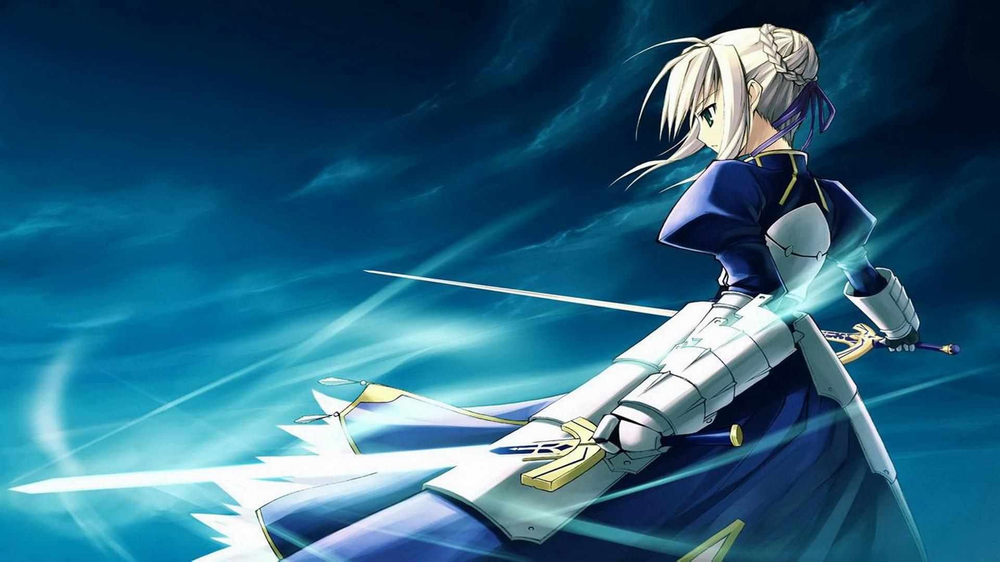
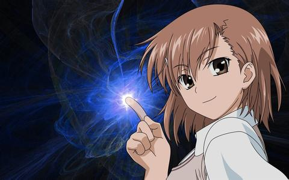
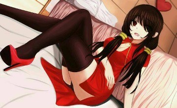

分享一下我喜欢的动漫女主
saber
御坂美琴
时崎狂三
亚瑟王不可能是个女孩

亚瑟·潘德拉贡（Arthur Pendragon），又译阿瑟·潘德拉贡，史称亚瑟王（King Arthur），是传说中的古不列颠最富有传奇色彩的伟大国王。人们对他的认识更多来自凯尔特神话传说和中世纪的野史文献。传说他是圆桌骑士的首领，一位近乎神话般的传奇人物，被称为“永恒之王”（the Once and Future King）。
你指尖跃动的电光，是我一生不变的信仰

动漫作品《魔法禁书目录》中主要人物、外传《科学超电磁炮》中主人公。学园都市中仅有的七名超能力者中排名第三位，学园都市最强“电击使”，代号“超电磁炮”。贵族女校常盘台中学二年级生，有“常盘台的王牌”和“最强无敌的电击公主”之称。性格好胜、正义感强，有着男孩子般的爽朗性格，但是却没有耐心，非常不坦率。
病娇

男主角五河士道所遇到的第3个精灵。突然转入来禅高中的转校生，自称喜欢士道。转学来时就对五河士道十分亲密，目的是为了和他“合为一体”。
周哥更喜欢谁呢？
saber
御坂美琴
时琦狂三
请确认选项 去了解关于她更多的事吧